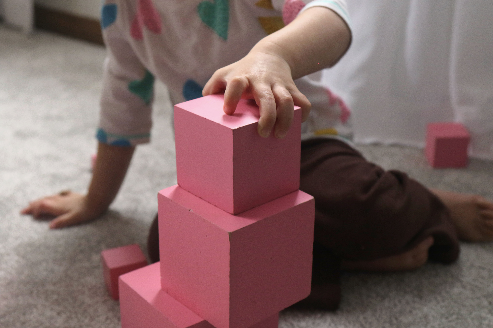
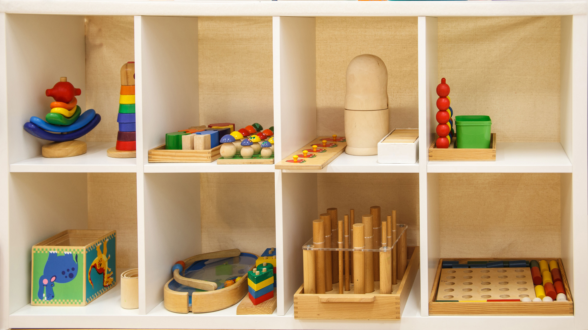
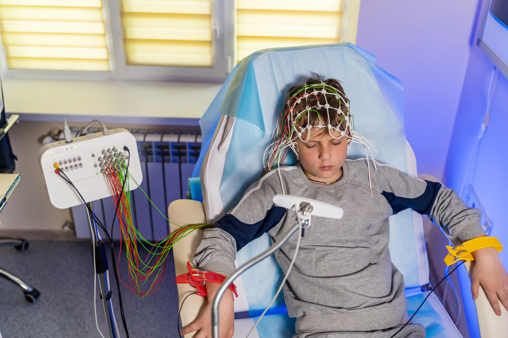
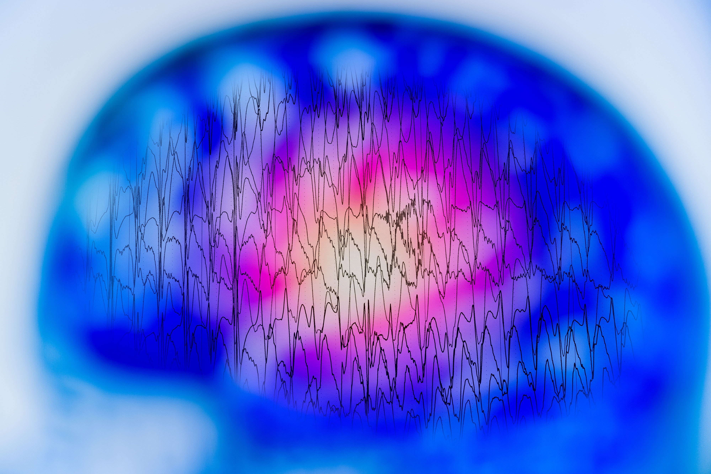

مرکز تخصصی روانشناسی کودک و علوم اعصاب
با بهرهگیری از روشهای علمی و دلسوزانه، به کودکان و بزرگسالان کمک میکنیم پتانسیل مغزشان را بشناسند و زندگی باکیفیتتری داشته باشند.

۰۱
خدمات کودک
کودکان زبان احساساتشان را نه از طریق کلمات، بلکه از طریق بازی بیان میکنند. بازیدرمانی یک روش علمی و اثربخش است که در آن درمانگر از فضای بازی برای کمک به کودک در پردازش احساسات، رویارویی با ترسها و تقویت مهارتهای اجتماعی استفاده میکند.

۰۲
تکنولوژی پیشرفتهنوروفیدبک لورتا پیشرفتهترین نسل از تکنیکهای بازخورد مغزی است. برخلاف نوروفیدبک سنتی که فقط سطح جمجمه را میبیند، لورتا میتواند فعالیت ساختارهای عمقی مغز را بهصورت سهبعدی شناسایی کرده و آموزش هدفمند بدهد.
"لورتا" مخفف Low Resolution Electromagnetic Tomography است — فناوریای که برای اولین بار امکان آموزش به شبکههای مغزی عمیق را فراهم کرد.

۰۳
ارزیابی تخصصی
نقشه مغزی یا qEEG یک ارزیابی غیرتهاجمی است که الگوهای امواج الکتریکی مغز را ضبط و تحلیل میکند. نتیجه این آزمون یک تصویر رنگی دقیق از فعالیت مغز شماست که به متخصص کمک میکند مشکلات را ریشهیابی کند و برنامه درمانی هدفمند طراحی نماید.

افراد با مشکلات تمرکز و حافظه، اختلالات خلقی، سردردهای مزمن، ضربه مغزی، یا کسانی که میخواهند عملکرد شناختیشان را ارتقا دهند.
هر سه روش مکمل یکدیگرند. بسیاری از مراجعان با نقشه مغزی شروع میکنند و سپس وارد پروتکل نوروفیدبک میشوند.
اگر فرزندتان دچار مشکلات رفتاری، اضطراب، ترس، یا مشکل در ارتباط با همسالان است، بازیدرمانی اولین و مؤثرترین گزینه است.
۳ تا ۱۲ سالبرای کودکان بزرگتر و بزرگسالانی که با ADHD، افسردگی، اضطراب یا مشکلات خواب دستوپنجه نرم میکنند، لورتا عمیقترین تغییر را ایجاد میکند.
همه سنیناگر نمیدانید مشکل دقیقاً کجاست، یا میخواهید مبنای علمی محکمی برای شروع درمان داشته باشید، نقشه مغزی نقطه شروع ایدهآل است.
نقطه شروعپرسشهای رایج
پاسخ رایجترین پرسشهای مراجعان را اینجا یافتید.
خیر، هر دو روش کاملاً غیرتهاجمی و بدون درد هستند. الکترودهای EEG تنها فعالیت الکتریکی مغز را ثبت میکنند و هیچ جریان یا تشعشعی وارد بدن نمیشود.
معمولاً از سن ۵ سالگی به بالا. کودکان کوچکتر به بازیدرمانی ارجاع میشوند چون میتوانند بدون نیاز به همکاری کامل، از آن بهرهمند شوند.
اکثر افراد پس از ۸ تا ۱۰ جلسه اولین تغییرات را احساس میکنند، اما یک دوره کامل درمانی معمولاً ۲۰ تا ۴۰ جلسه است. در بازیدرمانی نیز برنامه درمانی بین ۱۰ تا ۲۵ جلسه متفاوت است.
در مشاوره سنتی، درمانگر از زبان کلامی برای درک مشکل استفاده میکند. کودکان زیر ۱۲ سال اغلب نمیتوانند احساساتشان را کلامی کنند. بازی زبان طبیعی کودک است و درمانگر از طریق آن به دنیای درونی کودک دسترسی پیدا میکند.